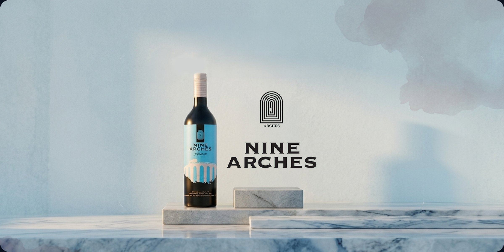
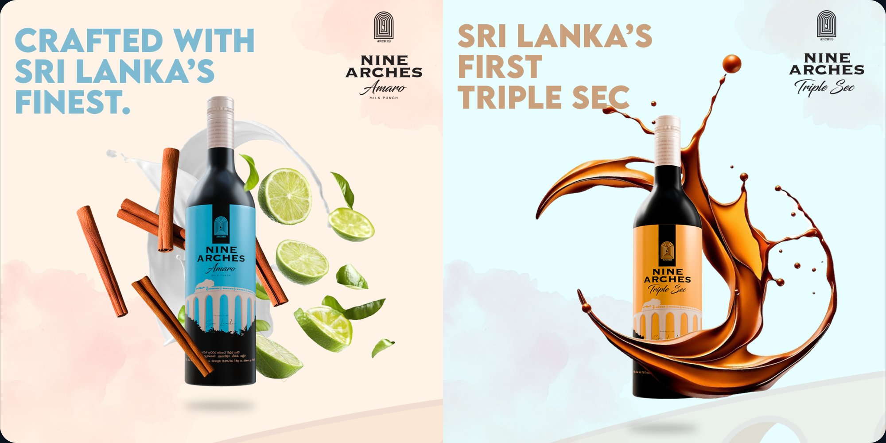
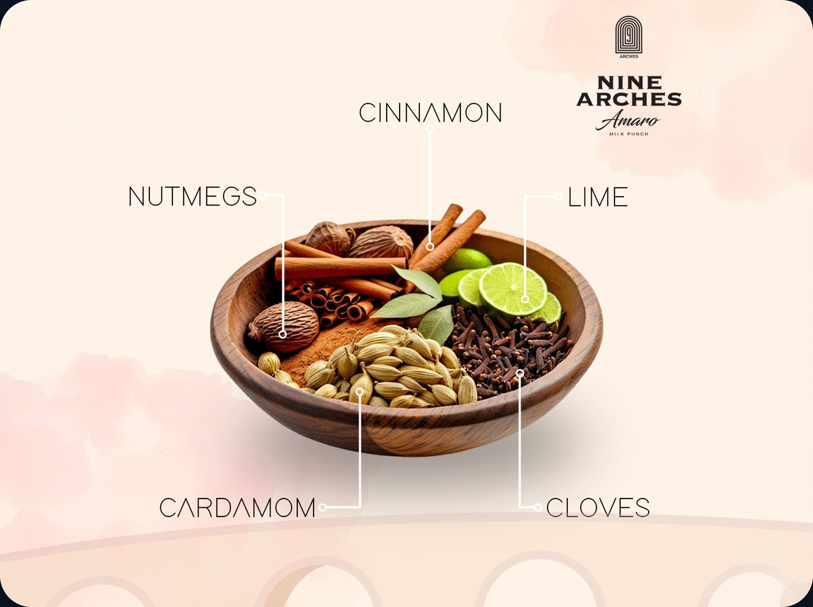
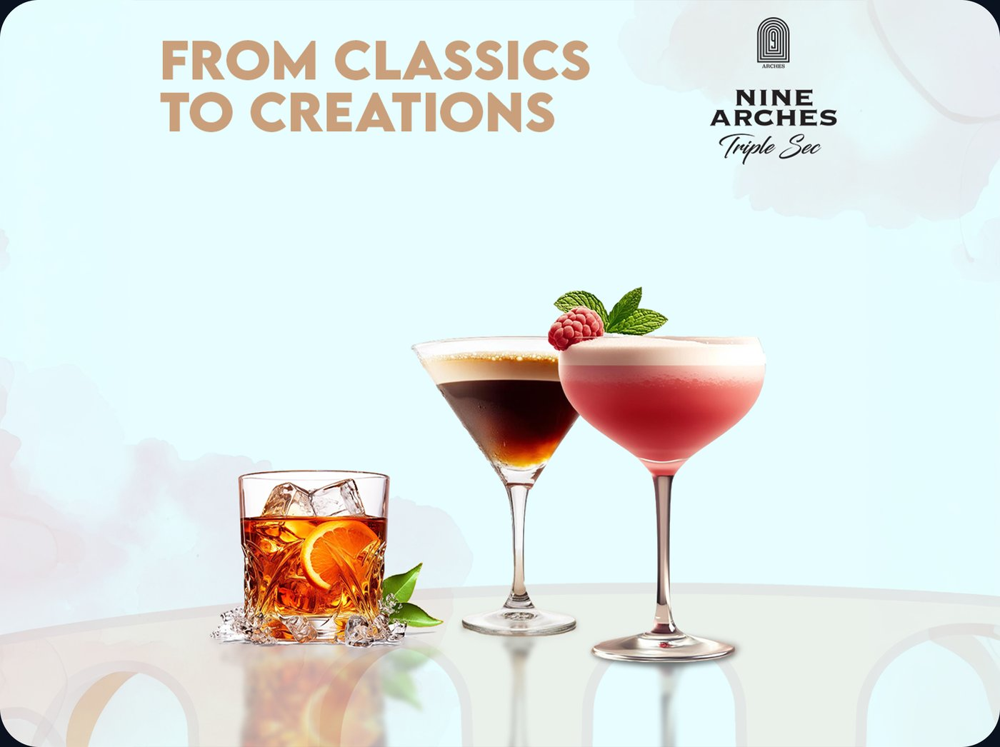

Nine Arches Social Media Content
Social media and product marketing content for Nine Arches, a Sri Lankan spirits brand — from cocktail campaigns to ingredient storytelling and product launches.

A bridge between Sri Lankan tradition and modern spirits craft.
Nine Arches started with a simple idea: to create something that blends the best of Sri Lanka's traditions with a touch of modern flair. Inspired by the iconic Nine Arches Bridge, a symbol of strength and craftsmanship, the brand set out to craft spirits that reflect the same dedication and care.
The Amaro Milk Punch is the heart of what they do — 100% natural ingredients, sourced directly from local plantations, with every spice and every drop of arrack chosen with care. Content built around the brand needed to carry that same story of land, people, and craft.
Nine Arches is more than a brand; it's a bridge between the past and the present, connecting tradition with innovation. The social content leans into that journey — rooted in authenticity, craftsmanship, and a deep love for what they do.


